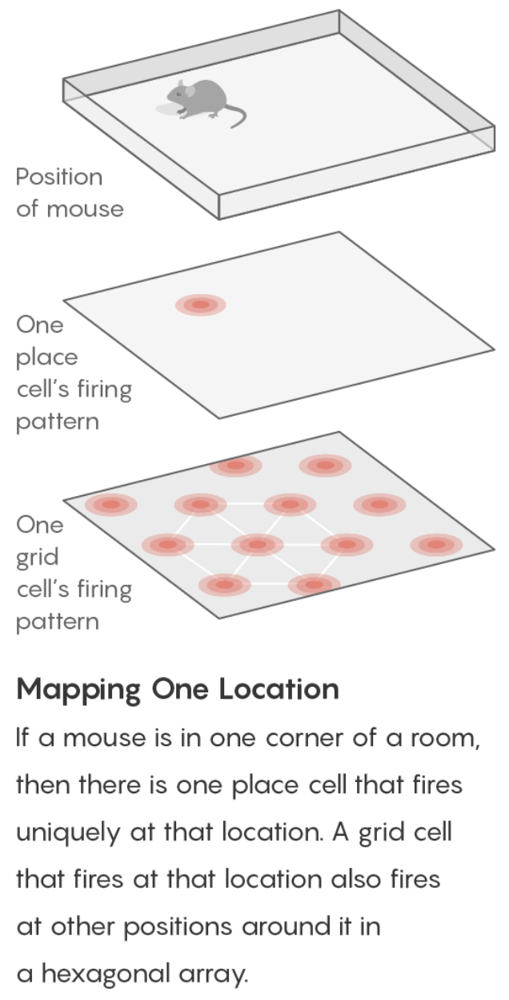
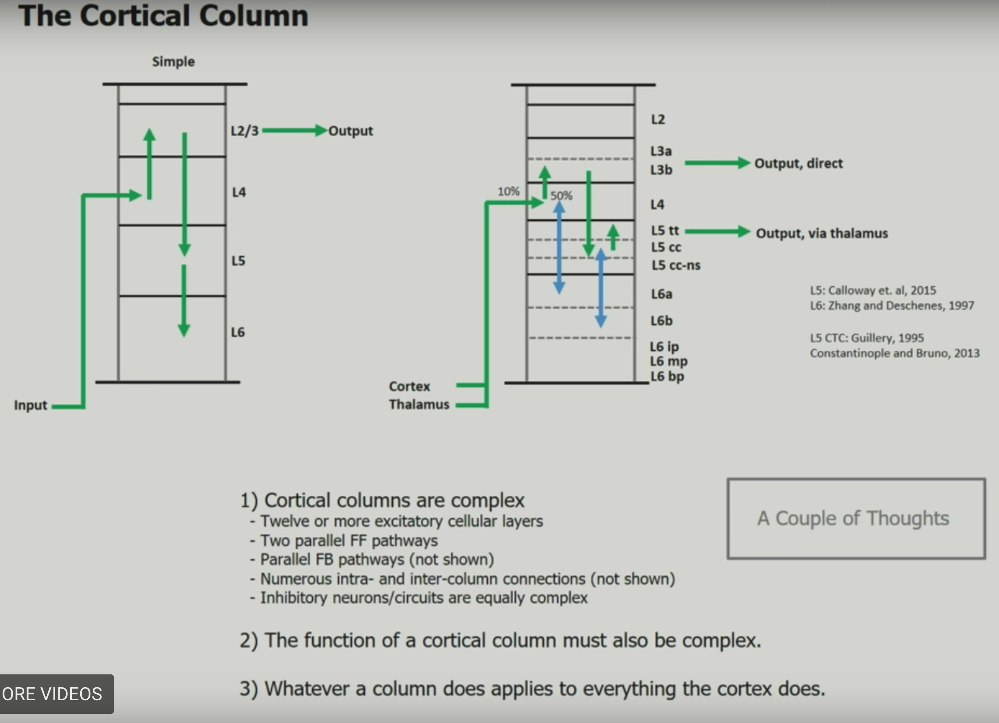
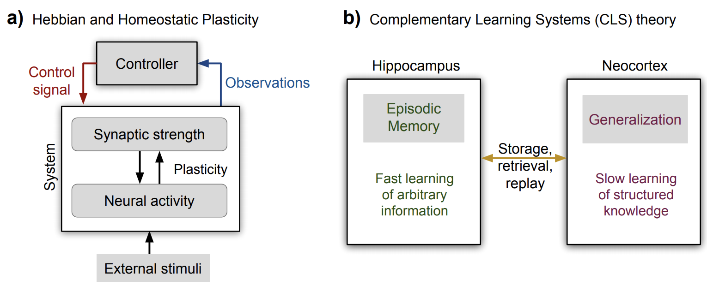
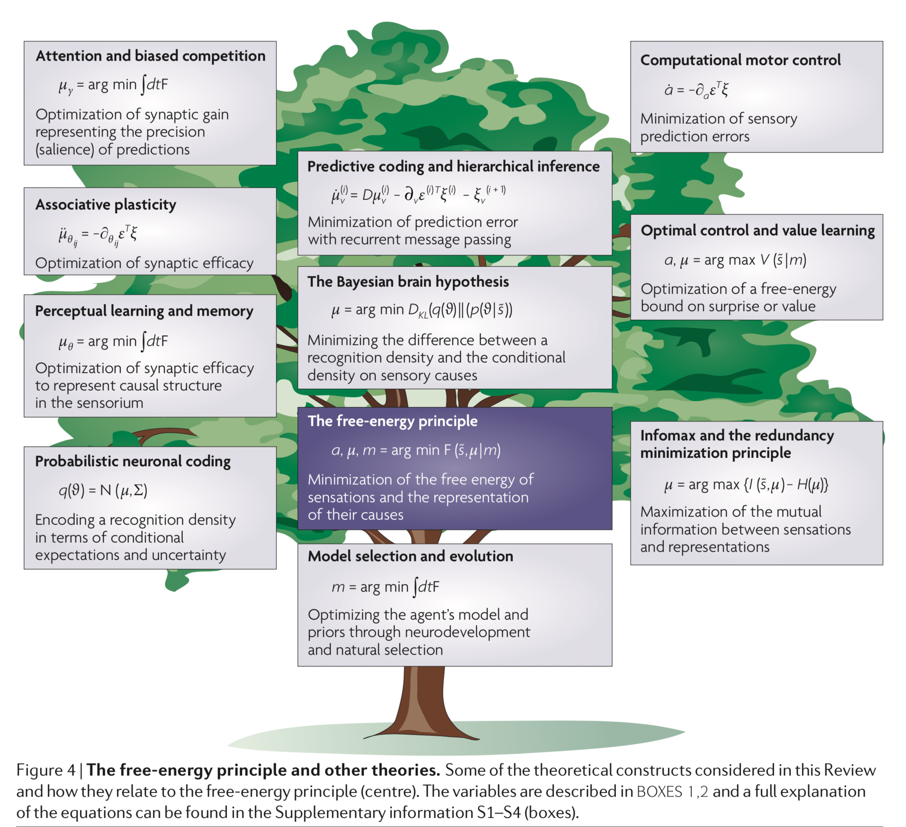

comp neuro
view markdownnavigation
- cognitive maps (tolman 1940s) - idea that rats in mazes learn spatial maps
- place cells (o’keefe 1971) - in the hippocampus - fire to indicate one’s current location
- remap to new locations
- grid cells (moser & moser 2005) - in the entorhinal cotex (provides inputs to the hippocampus) - not particular locations but rather hexagonal coordinate system
- grid cells fire if the mouse is in any location at the vertex (or center) of one of the hexagons

- there are grid cells with larger/smaller hexagons, different orientations, different offsets
- can look for grid cells signature in fmri: https://www.nature.com/articles/nature08704
- other places with grid cell-like behavior
- eye movement task
- some evidence for “time cells” like place cells for time
- sound frequency task https://www.nature.com/articles/nature21692
- 2d “bird space” task
high-dimensional computing
- high-level overview
- current inspiration has all come from single neurons at a time - hd computing is going past this
- the brain’s circuits are high-dimensional
- elements are stochastic not deterministic
- can learn from experience
- no 2 brains are alike yet they exhibit the same behavior
- basic question of comp neuro: what kind of computing can explain behavior produced by spike trains?
- recognizing ppl by how they look, sound, or behave
- learning from examples
- remembering things going back to childhood
- communicating with language
- HD computing overview paper
- in these high dimensions, most points are close to equidistant from one another (L1 distance), and are approximately orthogonal (dot product is 0)
- memory
- heteroassociative - can return stored X based on its address A
- autoassociative - can return stored X based on a noisy version of X (since it is a point attractor), maybe with some iteration
- this adds robustness to the memory
- this also removes the need for addresses altogether
definitions
- what is hd computing?
- compute with random high-dim vectors
- ex. 10k vectors A, B of +1/-1 (also extends to real / complex vectors)
- 3 operations
- addition: A + B = (0, 0, 2, 0, 2,-2, 0, ….)
- multiplication: A * B = (-1, -1, -1, 1, 1, -1, 1, …) - this is XOR
- want this to be invertible, dsitribute over addition, preserve distance, and be dissimilar to the vectors being multiplied
- number of ones after multiplication is the distance between the two original vectors
- can represent a dissimilar set vector by using multiplication
- permutation: shuffles values
- ex. rotate (bit shift with wrapping around)
- multiply by rotation matrix (where each row and col contain exactly one 1)
- can think of permutation as a list of numbers 1, 2, …, n in permuted order
- many properties similar to multiplication
- random permutation randomizes
- basic operations
- weighting by a scalar
- similarity = dot product (sometimes normalized)
- A $\cdot$ A = 10k
- A $\cdot$ A = 0 (orthogonal)
- in high-dim spaces, almost all pairs of vectors are dissimilar A $\cdot$ B = 0
- goal: similar meanings should have large similarity
- normalization
- for binary vectors, just take the sign
- for non-binary vectors, scalar weight
- data structures
- these operations allow for encoding all normal data structures: sets, sequences, lists, databases
- set - can represent with a sum (since the sum is similar to all the vectors)
- can find a stored set using any element
- if we don’t store the sum, can probe with the sum and keep subtracting the vectors we find
- multiset = bag (stores set with frequency counts) - can store things with order by adding them multiple times, but hard to actually retrieve frequencies
- sequence - could have each element be an address pointing to the next element
- problem - hard to represent sequences that share a subsequence (could have pointers which skip over the subsquence)
- soln: index elements based on permuted sums
- can look up an element based on previous element or previous string of elements
- could do some kind of weighting also
- pairs - could just multiply (XOR), but then get some weird things, e.g. A * A = 0
- instead, permute then multiply
- can use these to index (address, value) pairs and make more complex data structures
- named tuples - have smth like (name: x, date: m, age: y) and store as holistic vector $H = N*X + D * M + A * Y$
- individual attribute value can be retrieved using vector for individual key
- representation substituting is a little trickier….
- we blur what is a value and whit is a variable
- can do this for a pair or for a named tuple with new values
- this doesn’t always work
- set - can represent with a sum (since the sum is similar to all the vectors)
- examples
- context vectors
- standard practice (e.g. LSA): make matrix of word counts, where each row is a word, and each column is a document
- HD computing alternative: each row is a word, but each document is assigned a few ~10 columns at random
- thus, the number of columns doesn’t scale with the number of documents
- can also do this randomness for the rows (so the number of rows < the number of words)
- can still get semantic vector for a row/column by adding together the rows/columns which are activated by that row/column
- this examples still only uses bag-of-words (but can be extended to more)
- learning rules by example
- particular instance of a rule is a rule (e.g mother-son-baby $\to$ grandmother)
- as we get more examples and average them, the rule gets better
- doesn’t always work (especially when things collapse to identity rule)
- particular instance of a rule is a rule (e.g mother-son-baby $\to$ grandmother)
- analogies from pairs
- ex. what is the dollar of mexico?
- context vectors
ex. identify the language
- paper: LANGUAGE RECOGNITION USING RANDOM INDEXING (joshi et al. 2015)
- benefits - very simple and scalable - only go through data once
- equally easy to use 4-grams vs. 5-grams
- data
- train: given million bytes of text per language (in the same alphabet)
- test: new sentences for each language
- training: compute a 10k profile vector for each language and for each test sentence
- could encode each letter wih a seed vector which is 10k
- instead encode trigrams with rotate and multiply
- 1st letter vec rotated by 2 * 2nd letter vec rotated by 1 * 3rd letter vec
- ex. THE = r(r(T)) * r(H) * r(E)
- approximately orthogonal to all the letter vectors and all the other possible trigram vectors…
- profile = sum of all trigram vectors (taken sliding)
- ex. banana = ban + ana + nan + ana
- profile is like a histogram of trigrams
- testing
- compare each test sentence to profiles via dot product
- clusters similar languages - cool!
- gets 97% test acc
- can query the letter most likely to follor “TH”
- form query vector $Q = r(r(T)) * r(H)$
- query by using multiply X + Q * english-profile-vec
- find closest letter vecs to X - yields “e”
details
- mathematical background
- randomly chosen vecs are dissimilar
- sum vector is similar to its argument vectors
- product vector and permuted vector are dissimilar to their argument vectors
- multiplication distibutes over addition
- permutation distributes over both additions and multiplication
- multiplication and permutations are invertible
- addition is approximately invertible
- comparison to DNNs
- both do statistical learning from data
- data can be noisy
- both use high-dim vecs although DNNs get bad with him dims (e.g. 100k)
- HD is founded on rich mathematical theory
- new codewords are made from existing ones
- HD memory is a separate func
- HD algos are transparent, incremental (on-line), scalable
- somewhat closer to the brain…cerebellum anatomy seems to be match HD
- HD: holistic (distributed repr.) is robust
- different names
- Tony plate: holographic reduced representation
- ross gayler: multiply-add-permute arch
- gayler & levi: vector-symbolic arch
- gallant & okaywe: matrix binding with additive termps
- fourier holographic reduced reprsentations (FHRR; Plate)
- …many more names
- theory of sequence indexing and working memory in RNNs
- trying to make key-value pairs
- VSA as a structured approach for understanding neural networks
- reservoir computing = state-dependent network = echos-state network = liquid state machine - try to represen sequential temporal data - builds representations on the fly
papers
- text classification (najafabadi et al. 2016)
- Classification and Recall With Binary Hyperdimensional Computing: Tradeoffs in Choice of Density and Mapping Characteristics
- note: for sparse vectors, might need some threshold before computing mean (otherwise will have too many zeros)
dnns with memory
- Neural Statistician (Edwards & Storkey, 2016) summarises a dataset by averaging over their embeddings
- kanerva machine
- like a VAE where the prior is derived from an adaptive memory store
visual sampling
- Emergence of foveal image sampling from learning to attend in visual scenes (cheung, weiss, & olshausen, 2017) - using neural attention model, learn a retinal sampling lattice
- can figure out what parts of the input the model focuses on
dynamic routing between capsules
- hinton 1981 - reference frames require structured representations
- mapping units vote for different orientations, sizes, positions based on basic units
- mapping units gate the activity from other types of units - weight is dependent on if mapping is activated
- top-down activations give info back to mapping units
- this is a hopfield net with three-way connections (between input units, output units, mapping units)
- reference frame is a key part of how we see - need to vote for transformations
- olshausen, anderson, & van essen 1993 - dynamic routing circuits
- ran simulations of such things (hinton said it was hard to get simulations to work)
- learn things in object-based reference frames
- inputs -> outputs has weight matrix gated by control
- zeiler & fergus 2013 - visualizing things at intermediate layers - deconv (by dynamic routing)
- save indexes of max pooling (these would be the control neurons)
- when you do deconv, assign max value to these indexes
- arathom 02 - map-seeking circuits
- tenenbaum & freeman 2000 - bilinear models
- trying to separate content + style
- hinton et al 2011 - transforming autoencoders - trained neural net to learn to shift imge
- sabour et al 2017 - dynamic routing between capsules
- units output a vector (represents info about reference frame)
- matrix transforms reference frames between units
- recurrent control units settle on some transformation to identify reference frame
- notes from this blog post
- problems with cnns
- pooling loses info
- don’t account for spatial relations between image parts
- can’t transfer info to new viewpoints
- capsule - vector specifying the features of an object (e.g. position, size, orientation, hue texture) and its likelihood
- ex. an “eye” capsule could specify the probability it exists, its position, and its size
- magnitude (i.e. length) of vector represents probability it exists (e.g. there is an eye)
- direction of vector represents the instantiation parameters (e.g. position, size)
- hierarchy
- capsules in later layers are functions of the capsules in lower layers, and since capsule has extra properties can ask questions like “are both eyes similarly sized?”
- equivariance = we can ensure our net is invariant to viewpoints by checking for all similar rotations/transformations in the same amount/direction
- active capsules at one level make predictions for the instantiation parameters of higher-level capsules
- when multiple predictions agree, a higher-level capsule is activated
- capsules in later layers are functions of the capsules in lower layers, and since capsule has extra properties can ask questions like “are both eyes similarly sized?”
- steps in a capsule (e.g. one that recognizes faces)
- receives an input vector (e.g. representing eye)
- apply affine transformation - encodes spatial relationships (e.g. between eye and where the face should be)
- applying weighted sum by the C weights, learned by the routing algorithm
- these weights are learned to group similar outputs to make higher-level capsules
- vectors are squashed so their magnitudes are between 0 and 1
- outputs a vector
- problems with cnns
hierarchical temporal memory (htm)
- binary synapses and learns by modeling the growth of new synapses and the decay of unused synapses
- separate aspects of brains and neurons that are essential for intelligence from those that depend on brain implementation
necortical structure
- evolution leads to physical/logical hierarchy of brain regions
- neocortex is like a flat sheet
- neocortex regions are similar and do similar computation
- Mountcastle 1978: vision regions are vision becase they receive visual input
- number of regions / connectivity seems to be genetic
- before necortex, brain regions were homogenous: spinal cord, brain stem, basal ganglia, …

principles
- common algorithims accross neocortex
- hierarchy
- sparse distributed representations (SDR) - vectors with thousands of bits, mostly 0s
- bits of representation encode semantic properties
- inputs
- data from the sense
- copy of the motor commands
- “sensory-motor” integration - perception is stable while the eyes move
- patterns are constantly changing
- necortex tries to control old brain regions which control muscles
- learning: region accepts stream of sensory data + motor commands
- learns of changes in inputs
- ouputs motor commands
- only knows how its output changes its input
- must learn how to control behavior via associative linking
- sensory encoders - takes input and turnes it into an SDR
- engineered systems can use non-human senses
- behavior needs to be incorporated fully
- temporal memory - is a memory of sequences
- everything the neocortex does is based on memory and recall of sequences of patterns
- on-line learning
- prediction is compared to what actually happens and forms the basis of learning
- minimize the error of predictions
papers
- “A Theory of How Columns in the Neocortex Enable Learning the Structure of the World”
- network model that learns the structure of objects through movement
- object recognition
- over time individual columns integrate changing inputs to recognize complete objects
- through existing lateral connections
- within each column, neocortex is calculating a location representation
- locations relative to each other = allocentric
- much more motion involved
- multiple columns - integrate spatial inputs - make things fast
- single column - integrate touches over time - represent objects properly
- “Why Neurons Have Thousands of Synapses, A Theory of Sequence Memory in Neocortex”
- learning and recalling sequences of patterns
- neuron with lots of synapses can learn transitions of patterns
- network of these can form robust memory
forgetting
- Continual Lifelong Learning with Neural Networks: A Review
- main issues is catastrophic forgetting / stability-plasticity dilemma

- 2 types of plasticity
- Hebbian plasticity (Hebb 1949) for positive feedback instability
- compensatory homeostatic plasticity which stabilizes neural activity
- approaches: regularization, dynamic architectures (e.g. add more nodes after each task), memory replay
deeptune-style
- ponce_19_evolving_stimuli: https://www.cell.com/action/showPdf?pii=S0092-8674%2819%2930391-5
- bashivan_18_ann_synthesis
- adept paper
- use kernel regression from CNN embedding to calculate distances between preset images
- select preset images
- verified with macaque v4 recording
- currently only study that optimizes firing rates of multiple neurons
- pick next stimulus in closed-loop (“adaptive sampling” = “optimal experimental design”)
- J. Benda, T. Gollisch, C. K. Machens, and A. V. Herz, “From response to stimulus: adaptive sampling in sensory physiology”
-
find the smallest number of stimuli needed to fit parameters of a model that predicts the recorded neuron’s activity from the stimulus
-
maximizing firing rates via genetic algorithms
-
maximizing firing rate via gradient ascent
-
-
C. DiMattina and K. Zhang,“Adaptive stimulus optimization for sensory systems neuroscience”](https://www.frontiersin.org/articles/10.3389/fncir.2013.00101/full)
- 2 general approaches: gradient-based approaches + genetic algorithms
- can put constraints on stimulus space
- stimulus adaptation
- might want iso-response surfaces
- maximally informative stimulus ensembles (Machens, 2002)
- model-fitting: pick to maximize info-gain w/ model params
- using fixed stimulus sets like white noise may be deeply problematic for efforts to identify non-linear hierarchical network models due to continuous parameter confounding (DiMattina and Zhang, 2010)
- use for model selection
population coding
- saxena_19_pop_cunningham: “Towards the neural population doctrine”
- correlated trial-to-trial variability
- Ni et al. showed that the correlated variability in V4 neurons during attention and learning — processes that have inherently different timescales — robustly decreases
- ‘choice’ decoder built on neural activity in the first PC performs as well as one built on the full dataset, suggesting that the relationship of neural variability to behavior lies in a relatively small subspace of the state space.
- decoding
- more neurons only helps if neuron doesn’t lie in span of previous neurons
- encoding
- can train dnn goal-driven or train dnn on the neural responses directly
- testing
- important to be able to test population structure directly
- correlated trial-to-trial variability
- population vector coding - ex. neurons coded for direction sum to get final direction
- reduces uncertainty
- correlation coding - correlations betweeen spikes carries extra info
- independent-spike coding - each spike is independent of other spikes within the spike train
- position coding - want to represent a position
- for grid cells, very efficient
- sparse coding
- hard when noise between neurons is correlated
- measures of information
- eda
- plot neuron responses
- calc neuron covariances
interesting misc papers
- berardino 17 eigendistortions
- Fisher info matrix under certain assumptions = $Jacob^TJacob$ (pixels x pixels) where Jacob is the Jacobian matrix for the function f action on the pixels x
- most and least noticeable distortion directions corresponding to the eigenvectors of the Fisher info matrix
- gao_19_v1_repr
- don’t learn from images - v1 repr should come from motion like it does in the real world
- repr
- vector of local content
- matrix of local displacement
- why is this repr nice?
- separate reps of static image content and change due to motion
- disentangled rotations
- learning
- predict next image given current image + displacement field
- predict next image vector given current frame vectors + displacement
- kietzmann_18_dnn_in_neuro_rvw
- friston_10_free_energy
